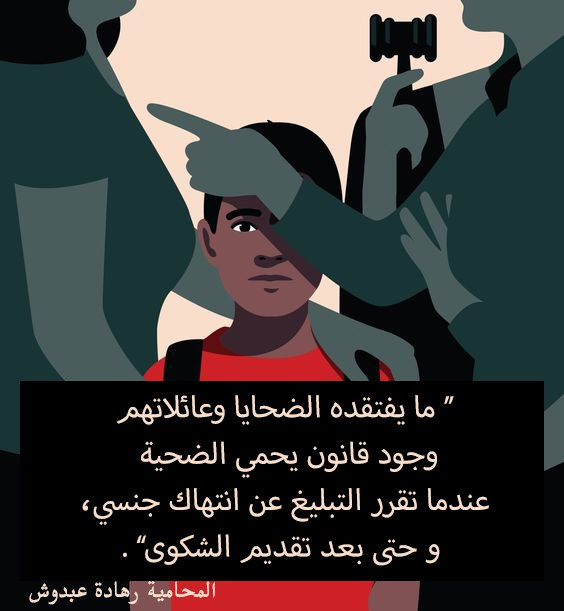

يعرّف القانون السوري جريمتي التحرش والاغتصاب في إطار الفعل المنافي للحشمة والتعرض للآداب والأخلاق العامة، بذلك يختصر العديد من جوانب القضيتين ويغطي حقيقة كل منهما، وإثر ذلك ظهر العديد من الثغرات القانونية منها عدم تحديد وقت محدد لمدة سير الدعوة وحسب ما أشارت له الأستاذة عائدة ضاهر قاضية تحقيق الأحداث في دمشق "انه يوجد الكثير من الثغرات القانونية التي تمس قضية التحرش والاعتداء على حرمة الآخرين، ومن بينها التأخر أحياناً بفصل هذه الأنواع من الدعاوي. مما يسبب وضع الضحية بموقف حرج فيما بعد حين ظهور الحكم، نظراً لأن الوقت يمضي وستكون الضحية قد تابعت حياتها وأصبح من الصعب عليها تذكر الحادثة والرجوع إليها. خصوصاً في حال إقبال الضحية على الزواج والارتباط، ففتح هذا الموضوع عندها قد يسبب لها المتاعب، كما أن قضايا التحرش والاغتصاب تسقط بالتقادم فبعد مرور فترة زمنية معينة لا يحق للضحية الإبلاغ عن الحادثة".
اتضح في تحقيق سابق لموقع أريج أن القانون السوري يعتبر التحرش فعل يتم من الرجل على المرأة فقط فلا يوجد نص قانوني يدافع عن الرجل، ويقول تقرير الأمم المتحدة الذي عقد في تموز 2021 " رغم أن النساء يشكلن النسبة الأكبر من ضحايا هذه الجريمة، فإن الرجال هم أيضاً من الضحايا".
تقول في هذا الإطار محامية أعتذرت عن ذكر اسمها " للنساء وضع مختلف عن الرجال في القانون، فالرجل البالغ إن تعرض لمضايقة بأمكانه الدفاع عن نفسه وإقافها".
وتحدث
الجزء الثاني
من التحقيق عن سفاح القربى وهو إعتداء إحدى الأبوين على طفلهم أو طفلتهم، وأشار إلى أن عقوبة الأهل تكون بمثابة جنحة تصل عقوبتها في الحد الأعلى 3 سنوات لا جناية قد تصل عقوبتها إلى 21 سنة، كما يحاسب القانون الأبناء في حال كان بسن الرشد ويعتبره مذنباً أيضاً ومن الممكن أن يسجن كالجاني.
تشير الأرقام الصادرة عن منظمات حقوق المرأة إلى أن نسبة كبيرة من النساء والفتيات في دمشق قد تعرضن للتحرش وتصل إلى أرقام مرعبة. ومع ذلك، فإن هذه الأرقام لا تعكس الواقع بشكل كامل، حيث أن الكثير من الضحايا يخشون الإبلاغ عن جرائمهن بسبب عدم الثقة بأنه سيتم أخذ حقوقهم وبسبب خوفهم من المجتمع. كما تجدر الإشارة إلى أن نسبة الذكور الذين يتعرضون للتحرش بدمشق أصبحت لا تقل أهمية عن نسبة الاناث، فنشهد اليوم أيضاً أرقاماً متصاعدة في دار حماية الطفل التي ترعى الأطفال المتعرضين لحالات التحرش.



.jpeg)